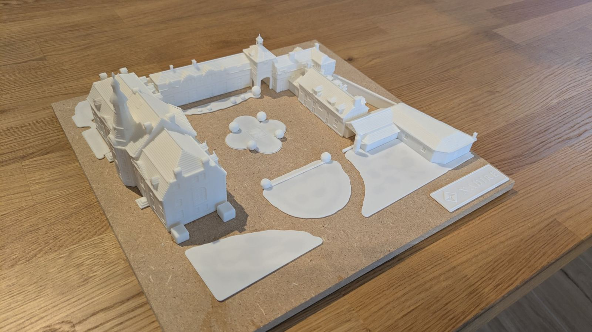
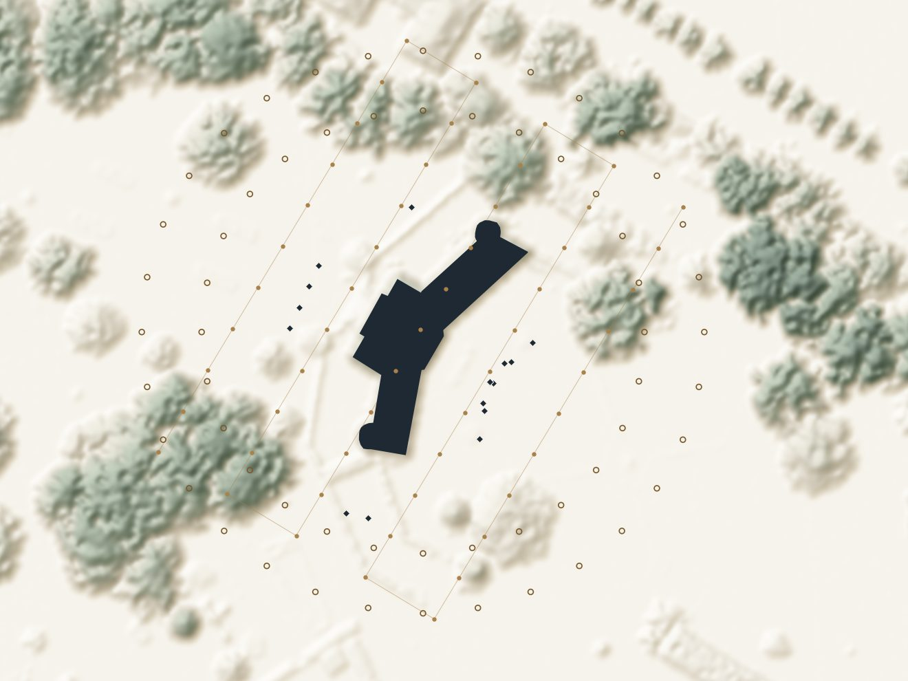
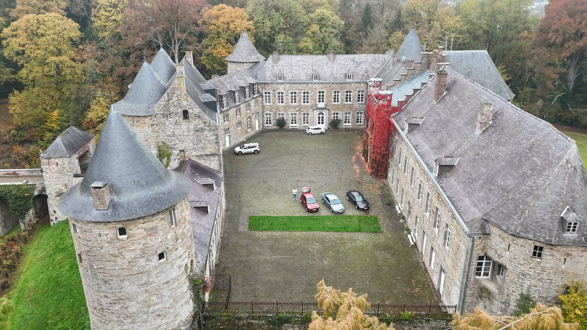
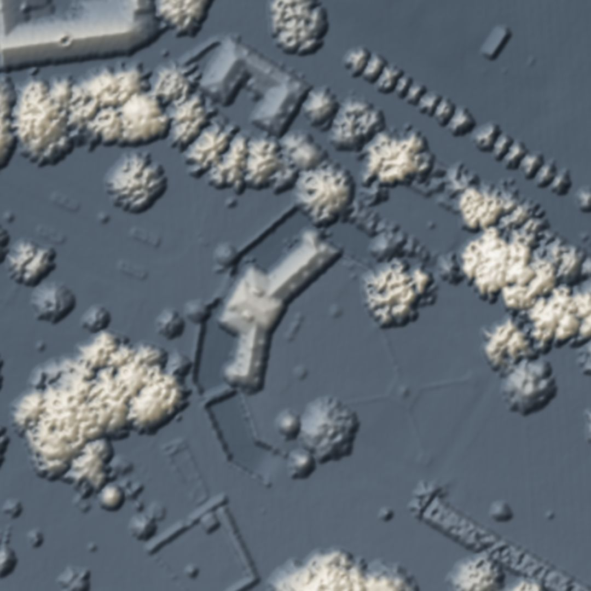
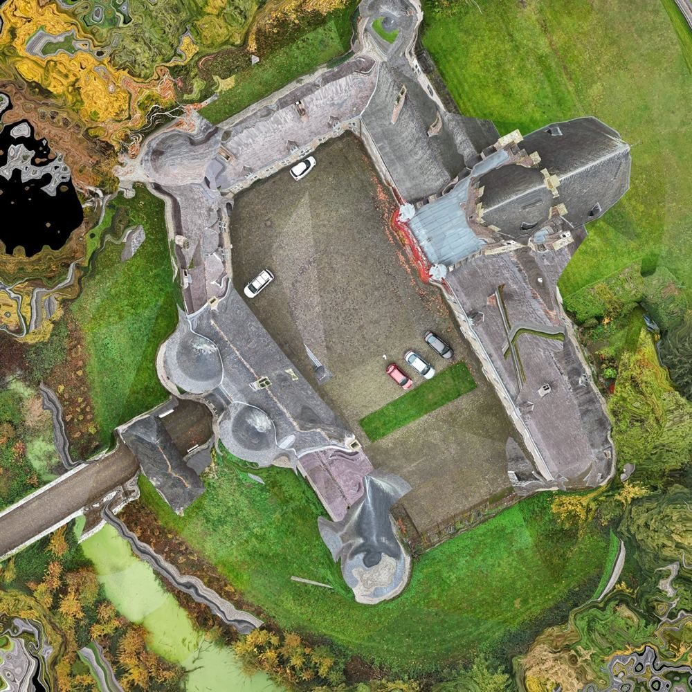
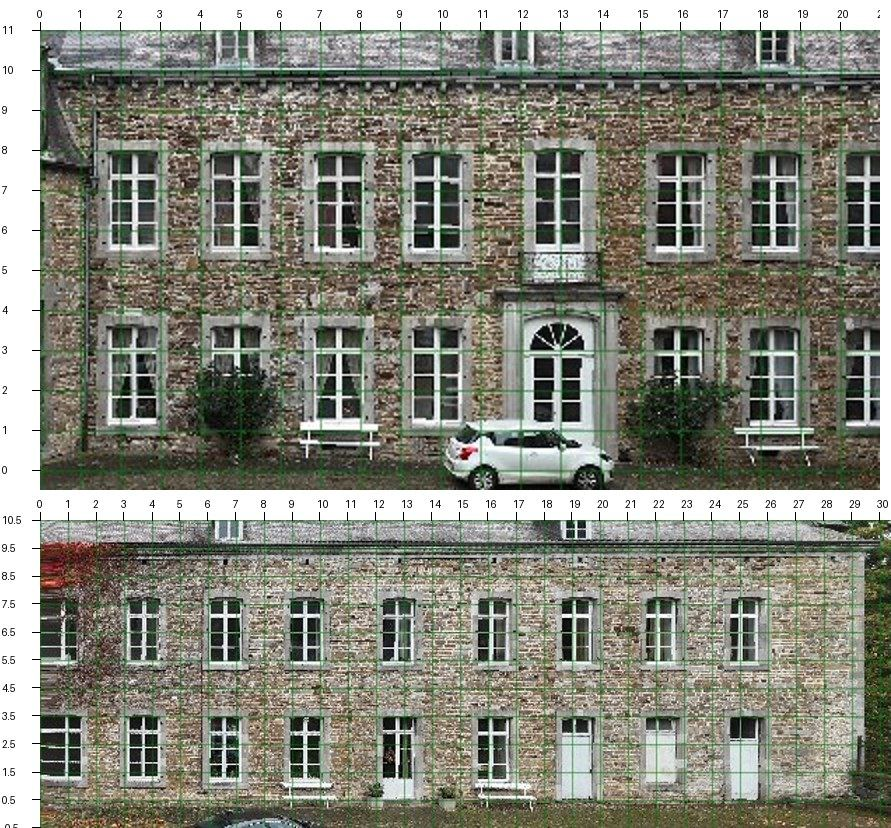
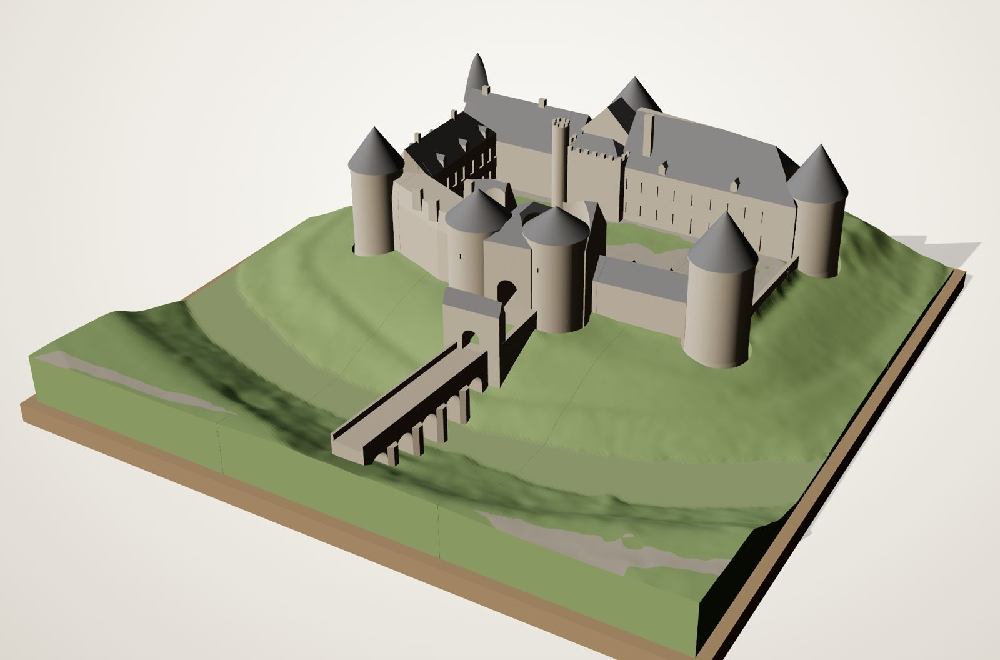
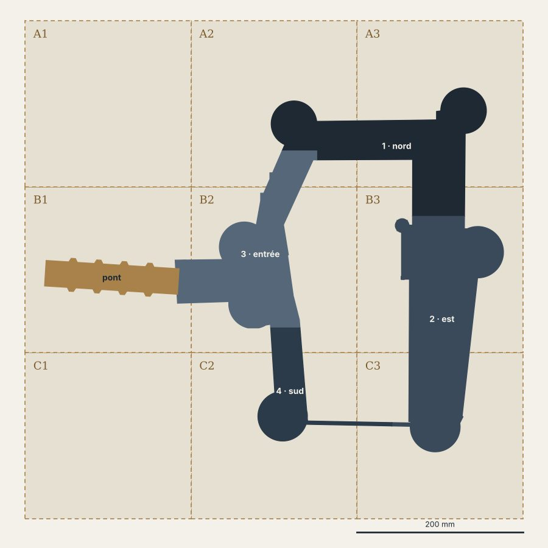
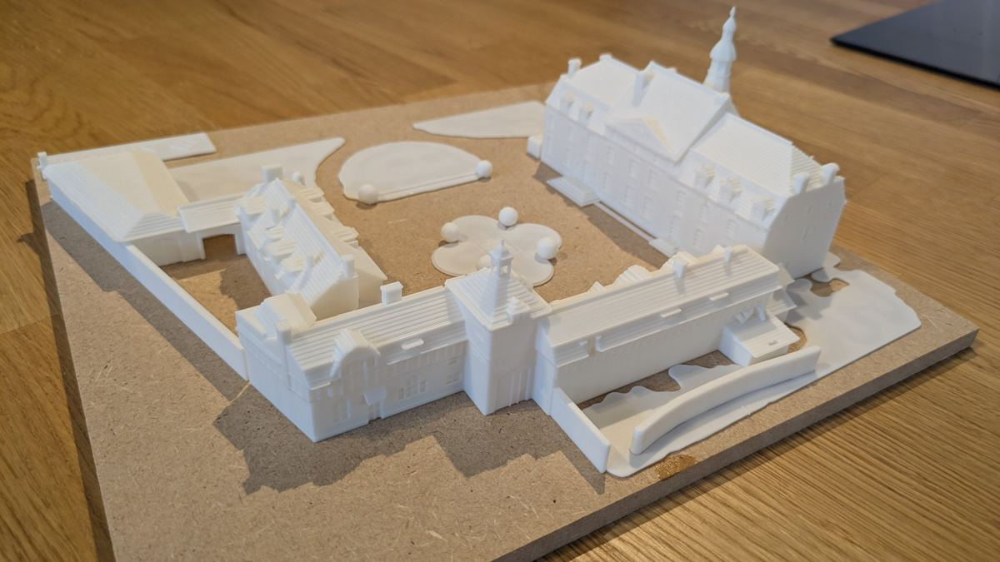
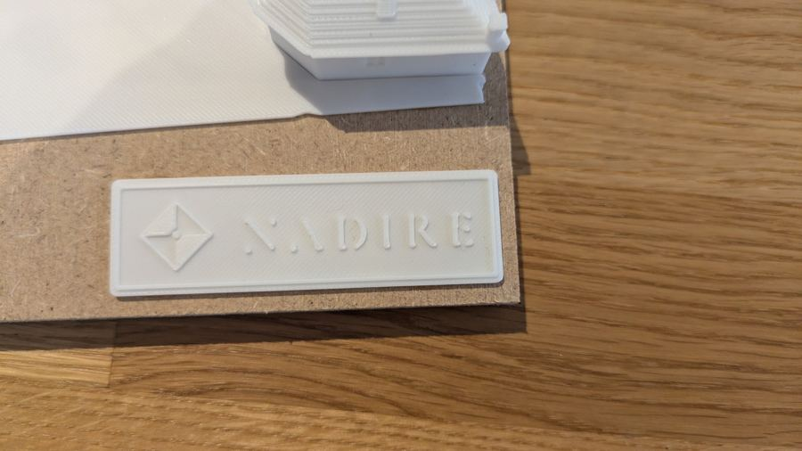

Maquettes van kastelen en gebouwen, in 3D geprint
Elke maquette vertrekt van een nauwkeurige opmeting van het gebouw met een drone, aangevuld met laserdata vanuit de lucht. Daken, ramen en schouwen worden opgemeten en op schaal weergegeven, en de maquette wordt op een houten sokkel gemonteerd.
Nicolas Lamine, bio-ingenieur, Waver

De werkwijze
Acht stappen, van de studie van de site tot de plaatsing, elk gecontroleerd voor de volgende begint. Voorbeelden: Boëlhe in Haspengouw, Corroy-le-Château en Bois-Seigneur-Isaac.
Studie van de site en vluchtplan
Elke site wordt vóór het bezoek bestudeerd: reliëf, begroeiing, hoogte van de gebouwen, luchtvaartbeperkingen. Daarna wordt de vlucht punt per punt berekend, met de hoek en de afstand van elke opname.

Opnames vanuit de lucht
Eén bezoek ter plaatse van één tot twee uur, met de schriftelijke toestemming van de eigenaar. De drone volgt het berekende plan en brengt het hele gebouw, daken en gevels, vanuit talrijke hoeken in beeld.

Hoogtereferentie
De metingen worden vergeleken met laseropmetingen vanuit de lucht. Zo worden goot- en nokhoogtes, dakhellingen en het reliëf van het terrein op enkele decimeters nauwkeurig vastgelegd. In Corroy werd elk leien dakvlak afzonderlijk opgemeten.


Fotogrammetrische reconstructie
De opnames worden in drie dimensies gereconstrueerd en gegeorefereerd. Dat levert een bovenaanzicht van 3 centimeter per pixel op en gevelopmetingen op schaal, waarop elke raamopening wordt geteld en gemeten.


Modellering
Het gebouw wordt volledig opnieuw getekend op basis van de metingen, volume per volume, tot de dakkapellen, schouwen en kunstwerken toe. Het terrein wordt met zijn werkelijke reliëf weergegeven.


Conformiteitscontrole
Het model wordt gevel per gevel vergeleken met de echte opnames. Elke afwijking wordt opgespoord en gecorrigeerd vóór de productie.


Voorbereiding van de productie
De maquette wordt opgedeeld in onderdelen die tot op een tiende millimeter passen, zodat de naden na de montage onzichtbaar blijven.

Productie en montage
De onderdelen worden in lagen van ongeveer een tiende millimeter vervaardigd, in wit of in twee tinten, en daarna gemonteerd op een houten sokkel met een gegraveerd naambordje.


Hebt u een gebouw in gedachten?
Bel me. In enkele minuten zeg ik u of de vlucht mogelijk is, welke maquettegrootte past en binnen welke termijn.
Contact
Ik ben bio-ingenieur, opgeleid in geomatica en de verwerking van ruimtelijke gegevens. NADIRE is ontstaan uit een eerste maquette, die van het domein van Boëlhe.
Bellen is het eenvoudigst. U kunt me ook schrijven met het adres van het gebouw, de gewenste grootte van de maquette en, als u die hebt, enkele foto's of plannen. Ik antwoord binnen 48 uur.
- nicolaslamine@outlook.com
- Telefoon
- +32 472 09 89 22
- Adres
- Waver, verplaatsingen in heel België
Er wordt enkel gevlogen met de schriftelijke toestemming van de eigenaar. Geen enkele foto wordt zonder zijn akkoord gepubliceerd.